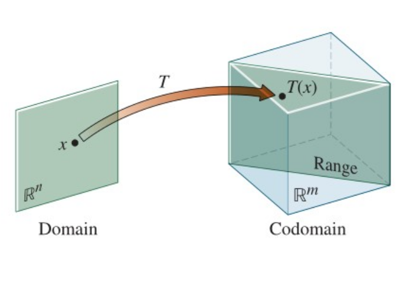
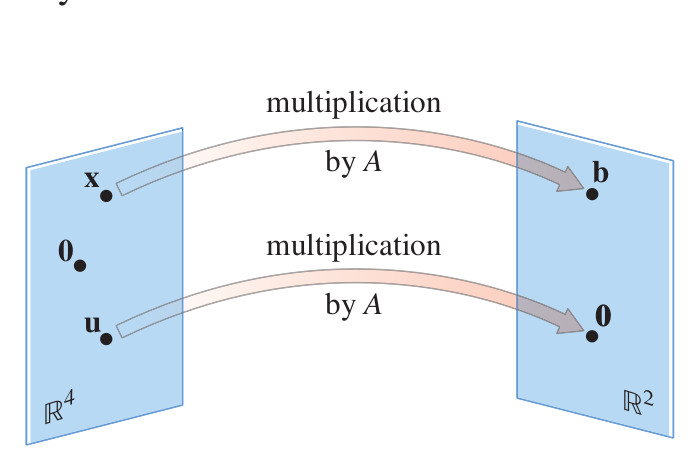

< Chapter 1: Linear Equations
1.7. Introduction to Linear Transformations
A transformation (or function or mapping or map) \(T : \real^n \rightarrow \real^m\) is a rule which assigns to each vector \(\vec{v}\) in \(\real^n\) a unique vector \(T(\vec{v}\ )\) in \(\real^m\).
The set \(\real^n\) is called the domain of \(T\) and the set \(\real^m\) is called the codomain of \(T\). For \(\vec{x}\) in \(\real^n\), we call \(T(\vec{x}\ )\) the image of \(\vec{x}\) (under the action of \(T\) ). The set of all images \(T(\vec{x})\) is called the range of \(T\).

Matrix Transformations
A matrix transformation is a transformation \(T : \real^n \rightarrow \real^m\) of the form \[T(\vec{x}\ ) = A\vec{x}\] where \(A\) is an \(m\) x \(n\) matrix.

Linear Transformations
A transformation \(T : \real^n \rightarrow \real^m\) is called linear if it satisfies the following two properties for all vectors \(\vec{u}, \vec{v} \in \real^n\) and all scalars \(c\).- \(\ T(\vec{u} + \vec{v}\ ) = T(\vec{u}\ ) + T(\vec{v}\ )\)
- \(\ T(c\vec{u}\ ) = cT(\vec{u}\ )\)
Properties of Linear Transformations
Let \(T : \real^n \rightarrow \real^m\) be a linear map. Then- \(\ T(\ \vec{0}\ ) = \vec{0}\)
- \(\ T(r_1\vec{v_1}+\dots+r_p\vec{v_p})=r_1T(\vec{v_1})+\dots+r_pT(\vec{v_p})\) for all \(\vec{v_i} \in \real^n\) and \(r_j \in \real\) .